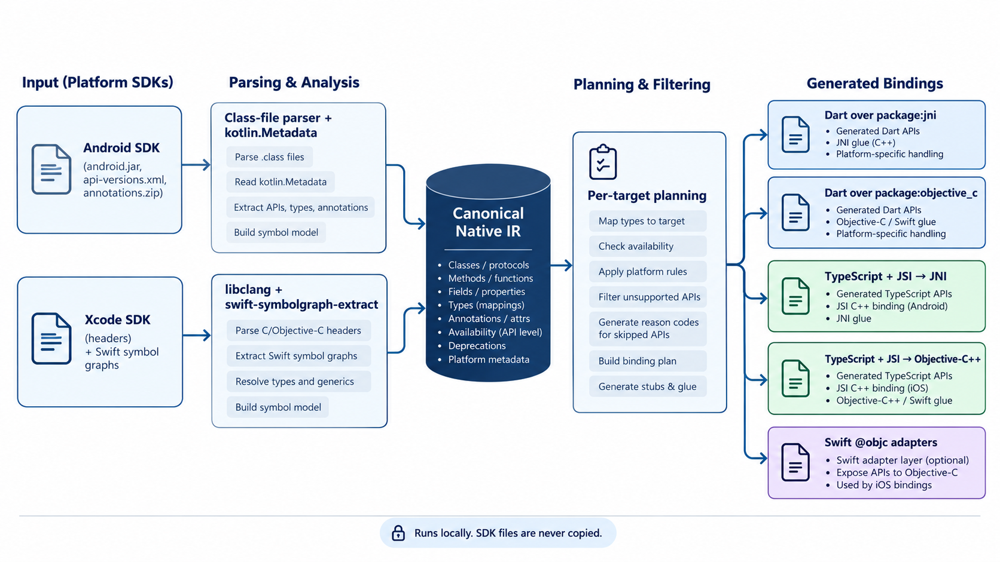
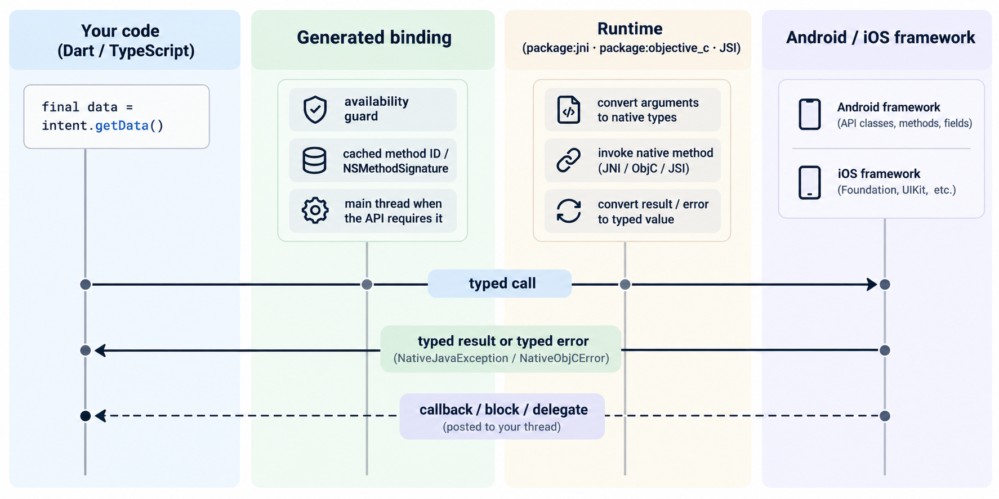

How it works
Architecture

android.jar + api-versions.xml + annotations.zip ─┐
Xcode SDK headers (libclang) ─────────────────────┼─▶ Native IR ─▶ planner ─▶ emitters ─▶ Dart / TypeScript
Swift symbol graphs (swift-symbolgraph-extract) ──┘ (JSON, (per target: + small runtimes
stable IDs) what is possible)Native IR
A platform-neutral, deterministic model: types, members, generics, nullability, per-platform availability, threading and provenance, with stable symbol IDs such as android.content.Intent#setData(android.net.Uri) or UIKit.UIView#-initWithFrame:. Every symbol carries a support status and, when it is not generated, a reason code.
Parsers
- Android: pure-Dart readers for zip, class files and generic signatures; availability from
api-versions.xml; annotations fromannotations.zip; library jars and AARs; Kotlinsuspenddetected from the compiled signature. - Apple: the Xcode toolchain's libclang via
dart:ffi; Swift-only APIs from symbol graphs.
Emitters and runtimes
| Target | Generated | Runtime |
|---|---|---|
| Flutter / Android | Dart extension types, cached JNI method IDs | package:jni + a small Dart runtime |
| Flutter / iOS | Dart extension types, typed objc_msgSend trampolines | package:objective_c |
| React Native / Android | TypeScript classes + member tables | C++ JSI runtime (JNI) |
| React Native / iOS | TypeScript classes + member tables | Objective-C++ JSI runtime (NSInvocation) |

For React Native the generated C++ is data (sorted tables), so one runtime serves every API. Method signatures on iOS come from the Objective-C runtime itself; the generator only says how each value maps to JavaScript.
Determinism and safety
- Output is byte-stable for the same SDK and configuration (
verify-reproducible). - Output paths are guarded against escapes and symlinks; stale files are removed only if this tool generated them.
audit-licenseblocks SDK binaries, copied headers, AST dumps and symbol graphs from being committed.